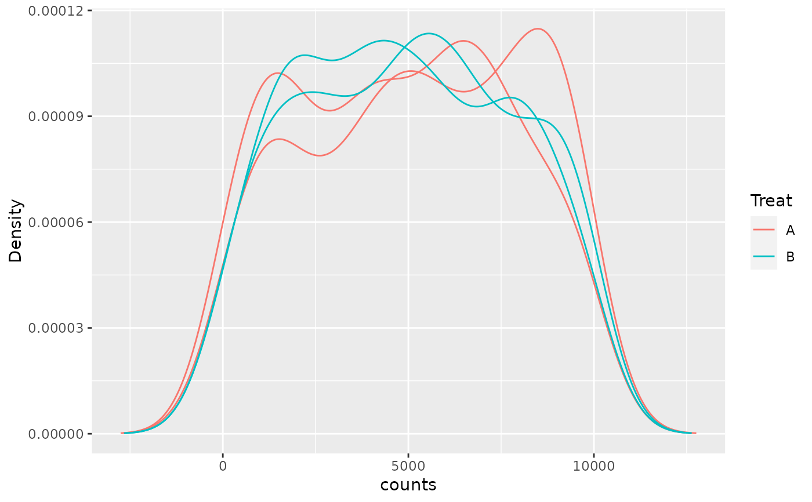

R/plotAssayDensities.R
plotAssayDensities-methods.RdPlot Densities for any assay within a SummarizedExperiment
plotAssayDensities(x, ...) # S4 method for SummarizedExperiment plotAssayDensities( x, assay = "counts", colour = NULL, linetype = NULL, trans = NULL, n_max = Inf, ... )
| x | A SummarizedExperiment object |
|---|---|
| ... | Not used |
| assay | An assay within x |
| colour | The column in colData to colour lines by |
| linetype | Any column in colData used to determine linetype |
| trans | character(1). Any transformative function to be applied to the
data before calculating the density, e.g. |
| n_max | Maximum number of points to use when calculating densities |
A ggplot2 object. Scales and labels can be added using conventional
ggplot2 syntax. (See example)
Uses ggplot2 to create a density plot for all samples within the selected assay
nrows <- 200; ncols <- 4 counts <- matrix(runif(nrows * ncols, 1, 1e4), nrows) df <- DataFrame(treat = c("A", "A", "B", "B")) se <- SummarizedExperiment( assays = SimpleList(counts = counts), colData = df ) plotAssayDensities(se, colour = "treat") + labs(colour = "Treat") 